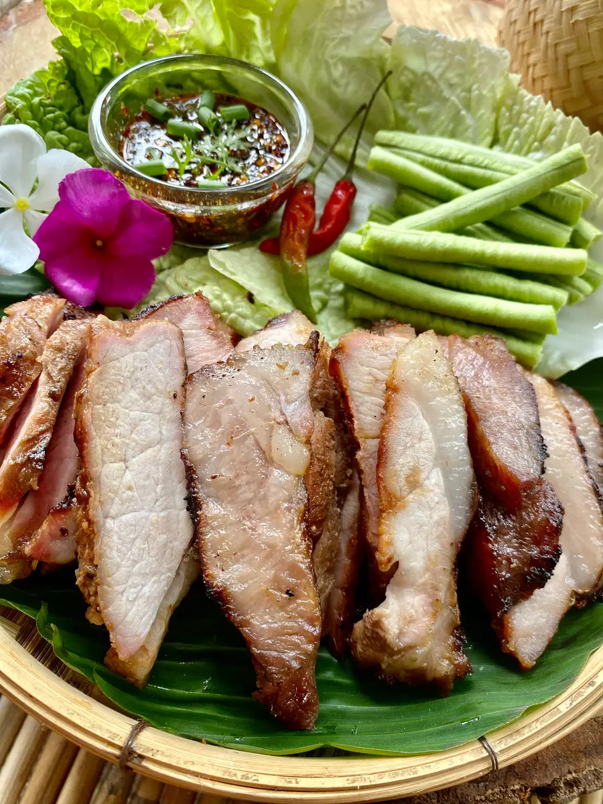

Thai Style Grilled Pork (Moo Yang)

How to make Thai Style Grilled Pork (Moo Yang)
With it's roots from the Isan region of Thailand, this dish sounds simple but oh boy is it delicious.
It can be found all over Thailand and is a great addition to any Thai style meal. Below is a great
recipe I found.
Ingredients
- 1.5 pounds of pork neck
- 1.5 tbsp of oyster sauce
- 1.5 tbsp of soy sauce
- .5 tbsp of black soy sauce
- 1tbsp of ground white pepper
- 1 tbsp of water
Steps
- In a large bowl, combine the oyster sauce, soy sauce, black soy sauce, ground white pepper and water to make a marinade.
- Add the pork neck to the bowl. Take a fork and prick some holes into it so that the pork will absorb the marinade.
- Cover the bowl with food wrap and marinate in the refrigerator for 30 minutes .
- After 30 minutes, turn your convection oven on at 437°F or 225°C. Place the pork on a grilling rack and cook for 30 minutes, turning the other side up halfway through.
- Turn off the oven. Transfer the pork to a cutting board and slice to serve.